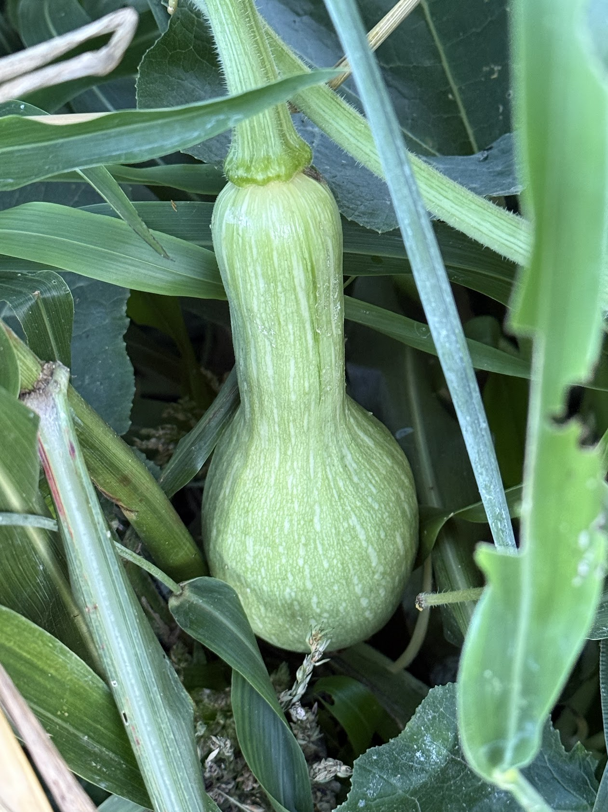
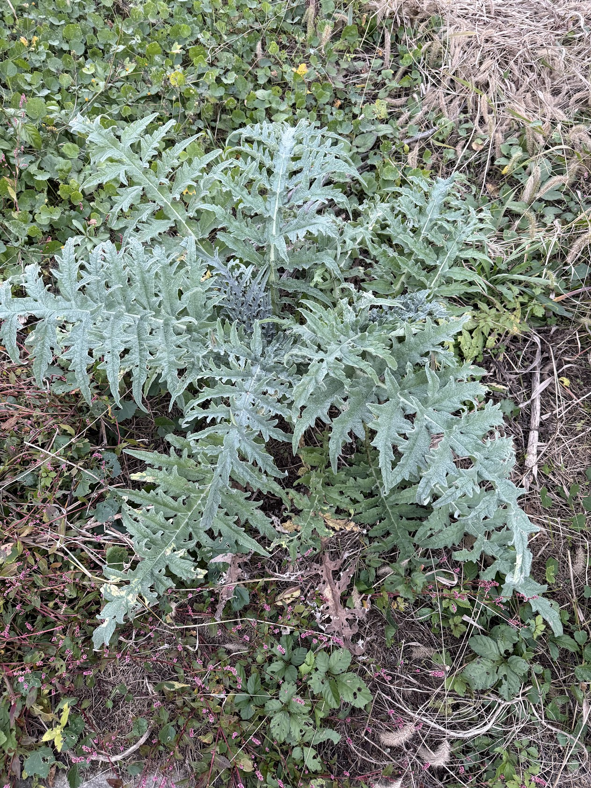

Soil Science
Regenerating soil through photosynthesis — the science for an era of fertilizer crisis
"Light Farming" is a concept advanced by Dr. Christine Jones. It holds that every food and fiber producer is first and foremost a "farmer of light."
In the 2026 Middle East war, a significant share of the world's nitrogen fertilizer and sulfur supply was destroyed. Recovery will take 3–5 years. Farming that depends on fertilizer is no longer cheap farming. What Light Farming offers is an agriculture that doesn't depend on external inputs — food produced through photosynthesis and soil microbes. What Masanobu Fukuoka's natural farming demonstrated in practice fifty years ago, Dr. Christine Jones has backed up with science.
AI replaces accounting, legal, translation, marketing, and programming. For a monthly subscription, a single person can now do work that required an entire company. This doesn't mean AI makes humans unnecessary — it means humans can return to their proper work.
AI identifies pests through image recognition, tracks soil moisture from satellite data, and predicts optimal planting days from weather patterns. But smelling the soil, reading leaf color, and feeling the health of the mycorrhizal network remain things only humans can do. AI supports observation, records, and analysis, but the dialogue with nature itself cannot be outsourced.
Light Farming is agriculture for living systems — systems you can measure but cannot fully control. The combination of AI and Light Farming makes small-scale distributed agriculture viable: no corporate-scale machinery investment, no massive chemical inputs required, just one person regenerating soil while producing food. At the intersection of an age without fertilizer and an age of AI, Light Farming becomes implementable.
What if there was a process that could remove carbon dioxide from the atmosphere, replace it with oxygen, support soil microbes, rebuild topsoil, enrich the nutrient-density of food, restore the water balance, and improve farm profitability? Fortunately, there is. It is called photosynthesis.
Photosynthesis is the miraculous process performed in the chloroplasts of green leaves. It combines atmospheric carbon dioxide (CO2) and water (H2O) from the soil, capturing light energy to produce simple sugars — biochemical energy.
These simple sugars — called "photosynthates" — are the foundation of life above and below ground. Plants convert these sugars into a diverse array of carbon compounds: starches, proteins, organic acids, cellulose, lignin, waxes, and oils.
Fruits, vegetables, nuts, seeds, and grains are all "packaged sunlight," born of photosynthesis.
The Plant-Microbe Bridge
It surprises many people to learn that over 95% of life on land lives in the soil, and most of its energy comes from plant carbon.
Exudates from living roots are the most energy-rich carbon source. In exchange for "liquid carbon," the microbes around plant roots increase the availability of minerals and trace elements needed to sustain the host's health and vitality.
Unfortunately, many of today's farming practices significantly damage soil microbial communities, drastically reducing the amount of liquid carbon transferred to and stabilized in soil.

Over the past 150 years, many of the world's major agricultural soils have lost 30–75% of their carbon, adding billions of tons of CO2 to the atmosphere. Soil carbon loss significantly reduces land productivity and farm profitability.
Source: Thomas, D.E. (2003). Nutrition and Health
Over the past 70 years, nutrient levels have dropped 10–100% across nearly every type of food. Modern people would need to consume twice as much meat, three times as much fruit, and four to five times as many vegetables to obtain the same minerals and trace elements as in 1940.
The dramatic decline in the nutrient density of today's chemically produced foods is commonly attributed to the "dilution effect" — mineral content falls as yields rise.
But in high-yielding vegetables, crops, and pastures grown in healthy, biologically active soil, no decline in nutrient levels is observed. In fact, the opposite holds true.
There can be no life without soil and no soil without life; they have evolved together.
Five Principles
Bare ground has zero photosynthetic capacity. Bare ground is not only a carbon source — it is vulnerable to wind and water erosion. If you can see the soil, you are losing carbon and nitrogen.
Mycorrhizal fungi transport nitrogen, phosphorus, sulfur, potassium, calcium, magnesium, iron, and trace elements in exchange for liquid carbon. When mycorrhizal symbiosis functions effectively, 20–60% of the carbon fixed by green leaves is sent directly to the soil mycelial network.
Every plant exudes its own unique blend of sugars, enzymes, phenols, and amino acids. The greater the plant diversity, the greater the microbial diversity — and the more robust the soil ecosystem.
Mycorrhizal fungi can supply up to 90% of a plant's nitrogen and phosphorus needs. Reducing the rate of high-analysis synthetic fertilizers and other chemicals allows microbes to do what they do best.
Before the intensification of agriculture, many animal species were in contact with soil. There is no doubt that the presence of animals improves soil function. Regenerative grazing is particularly effective at restoring deep soil carbon levels in perennial pastures.

Underground Networks
Research has drawn attention to the existence of "common mycorrhizal networks" (CMNs) in diverse pastures, crops, and home gardens.
Plants within a plant community are found to be connected to one another through vast underground "superhighways," capable of exchanging carbon, water, and nutrients.
Common mycorrhizal networks increase plant resistance to pests and disease, improve plant vitality, and enhance soil health.
Carbon conversion efficiency (CCE) is the proportion of carbon inputs (plant litter, animal dung, root exudates, etc.) that is biologically converted into stable soil carbon.
Analysis of ten stable isotope experiments, where roots were grown in situ in the field, found that stabilization of root-derived carbon ranged from 18–91% (average 46%), while stabilization of carbon derived from above-ground biomass ranged from 3–17% (average 8.3%).
Organic carbon holds 4–20 times its own weight in water. In many environments, water availability — more than nutrient availability — is the most limiting factor for production.
Every food and fiber producer — whether producing grain, beef, milk, lamb, wool, cotton, sugar, nuts, fruit, vegetables, flowers, hay, silage, or timber — is first and foremost a "farmer of light."
Our role is to manage green plants in a way that transfers and maintains as much light energy as possible into the soil battery — as stable soil carbon.
The question is not "how much carbon can be sequestered in a particular way in a particular place," but "how much soil is sequestering carbon."
Raising soil carbon levels improves farm productivity, restores landscape function, reduces the impact of anthropogenic emissions, and increases resilience to climate change.
Through food choices and farming and gardening practices, every one of us has an opportunity to influence how soil is managed.
This page is based on Dr. Christine Jones's paper "Light Farming: Restoring carbon, organic nitrogen and biodiversity to agricultural soils" (2018).
For details, visit Amazing Carbon.
Get Started
For the future of our children and grandchildren,
will you begin rewriting the story of soil today?